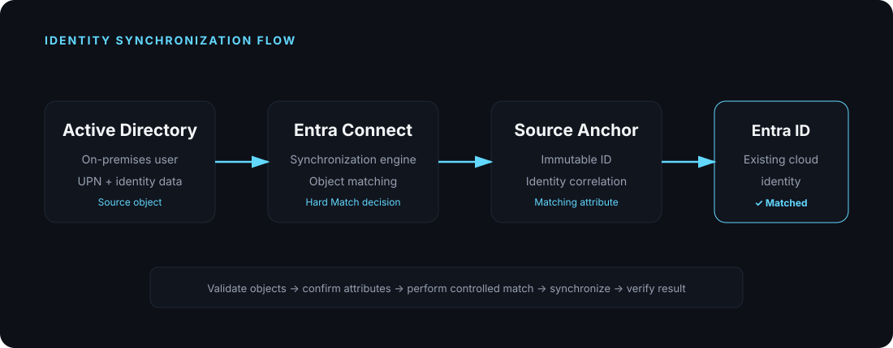

The Problem
A user already exists in the cloud while the corresponding on-premises AD object also needs to be synchronized. If the identities are not matched correctly, synchronization can result in duplicate or conflicting objects.
CASE STUDY 01 · IDENTITY · HYBRID IDENTITY
A real-world identity synchronization scenario where an on-premises Active Directory user and an existing cloud identity need to be matched correctly through Entra Connect.
A user already exists in the cloud while the corresponding on-premises AD object also needs to be synchronized. If the identities are not matched correctly, synchronization can result in duplicate or conflicting objects.
Establish the correct relationship between the on-premises identity and the existing Microsoft Entra ID object while preserving the intended cloud identity and avoiding unnecessary duplicate objects.

Determine which AD and cloud objects represent the same user.
Review UPN, source anchor and existing identity attributes.
Use the appropriate Hard Match process to associate the intended objects.
Run synchronization and validate that the expected identity is retained.
Hybrid identity troubleshooting is not simply about whether an object synchronizes. The important part is understanding how Entra Connect determines object identity and how source anchor values affect matching. Hard Match should be treated as a controlled identity operation, with validation before and after the change.